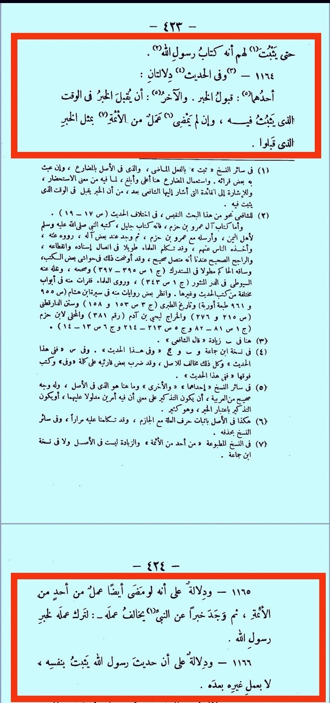

ইমাম শাফিই রাহ. একটি হাদিসের আলোকে চমৎকার তিনটি 'নুকতা' উল্লেখ করেছেন
১১ ডিসেম্বর, ২০২৫
ইমাম শাফিই রাহ. একটি হাদিসের আলোকে চমৎকার তিনটি 'নুকতা' উল্লেখ করেছেন—
১.
‘হাদিস প্রমাণিত হওয়া মাত্রই তা গ্রহণ করে নিতে হবে, যদিও ইমামগন তার উপর আমল না করেন।’
২.
‘যদি কোনো ইমাম এমন কোনো আমল করে থাকেন, যার বিপরীতে রাসূল সাল্লাল্লাহু আলাইহি ওয়া সাল্লাম থেকে হাদিস পাওয়া গেছে; তবে সেই হাদিসের কারণে ইমামের আমল পরিহার করতে হবে। ’
৩.
'রাসূল সাল্লাল্লাহু আলাইহি ওয়া সাল্লামের হাদিস আপনা-আপনি প্রমাণিত হয়; পরবর্তী কারও আমলের ওপর ভিত্তি করে নয়।’
[আর-রিসালাহ— ৪২৩-৪২৪]
ইমাম শাফিই রাহ. একটি হাদিসের আলোকে চমৎকার তিনটি 'নুকতা' উল্লেখ করেছেন—
১.
‘হাদিস প্রমাণিত হওয়া মাত্রই তা গ্রহণ করে নিতে হবে, যদিও ইমামগন তার উপর আমল না করেন।’
২.
‘যদি কোনো ইমাম এমন কোনো আমল করে থাকেন, যার বিপরীতে রাসূল সাল্লাল্লাহু আলাইহি ওয়া সাল্লাম থেকে হাদিস পাওয়া গেছে; তবে সেই হাদিসের কারণে ইমামের আমল পরিহার করতে হবে। ’
৩.
'রাসূল সাল্লাল্লাহু আলাইহি ওয়া সাল্লামের হাদিস আপনা-আপনি প্রমাণিত হয়; পরবর্তী কারও আমলের ওপর ভিত্তি করে নয়।’
[আর-রিসালাহ— ৪২৩-৪২৪]
